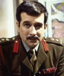
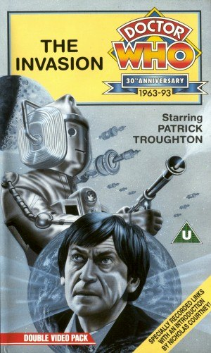
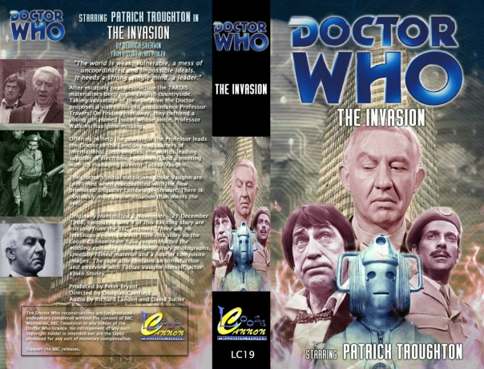
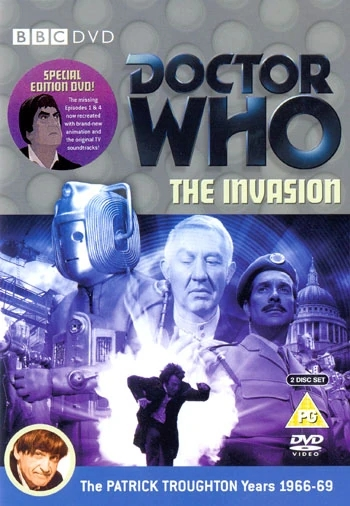
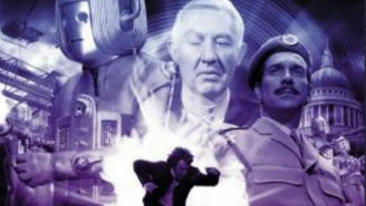
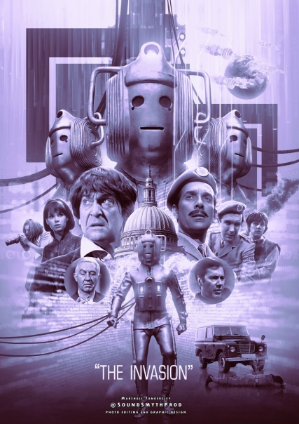
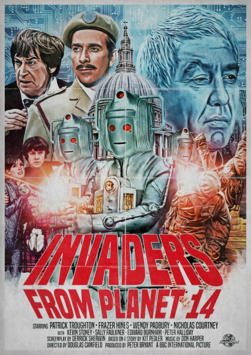
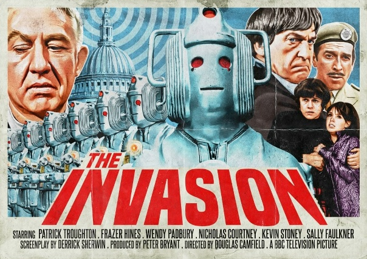

Эра Второго Доктора (6 сезон)
<<< НАЗАД ||| 3. Вторжение ||| ДАЛЬШЕ >>>
+ Реконструкция (эпизоды 1, 4) LCRecon Субтитры: Русские и Английские |  |
|---|---|
+ Черно-белая анимация (эпизоды 1, 4) Субтитры: Русские и Английские | |
2 ноября - 21 декабря 1968
8 эпизодов по 25 мин.
| 2, 3, 5-8 эпизоды сохранились - 16mm t/r * На утерянные 1 и 4 эпизоды имеется реконструкция и анимация |
|---|
 |  |  помощник |  помощник |
«Вторжение» — киберлюди готовят захват Земли через корпорацию IE, а Второй Доктор, Джейми и Зои встают на пути угрозы. Важную роль играет Бригадир Летбридж‑Стюарт и ЮНИТ: вместе они срывают план вторжения и дают отпор армии киберлюдей. Тон серии — напряжённый и «военный», будто город замер в ожидании решающей схватки.
 VHS - июнь 1993 |  LC recon - февраль 2003 |  DVD - 6 ноября 2006 * Версия в нашей группе |
|---|








